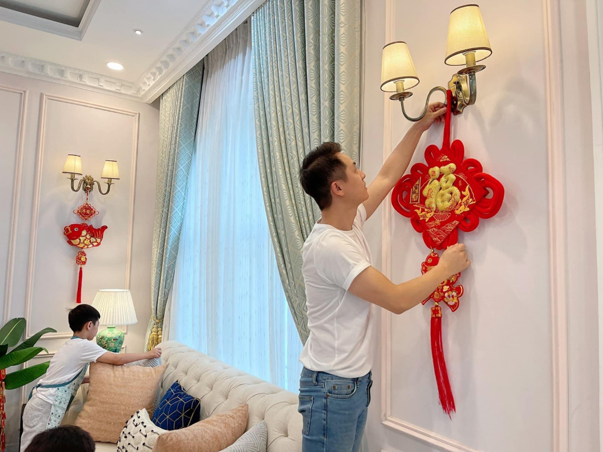
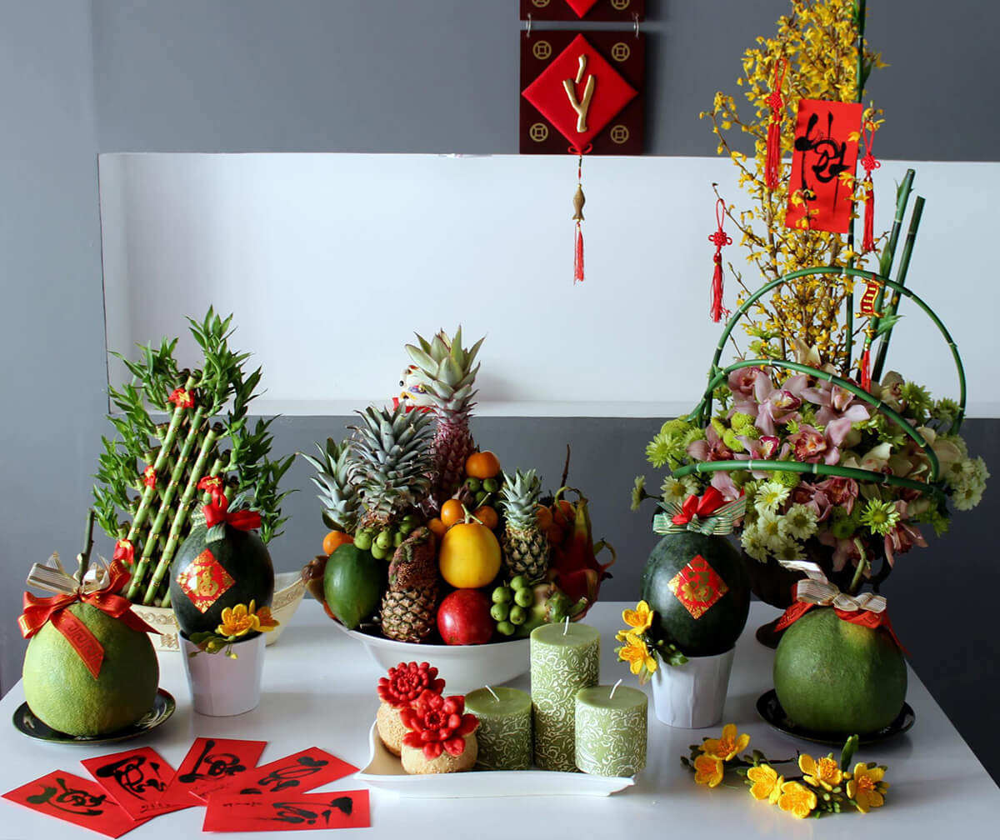
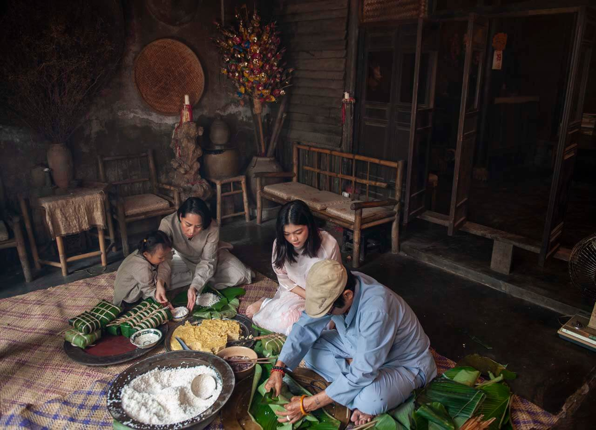
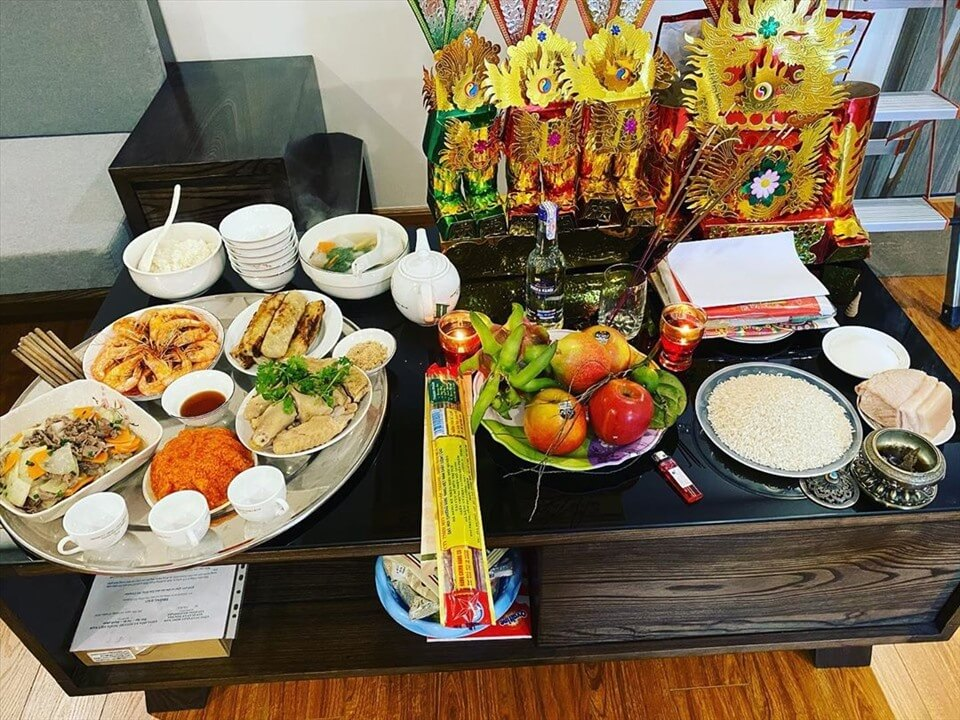
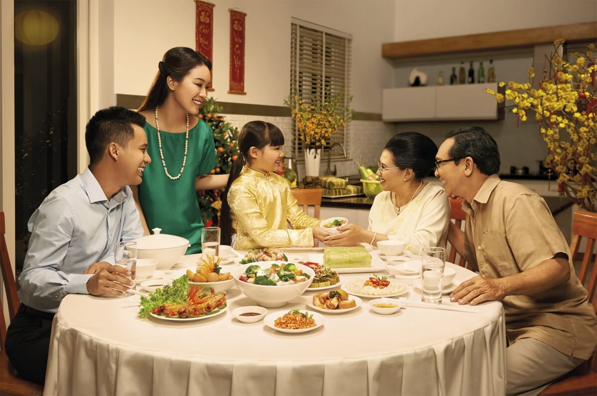
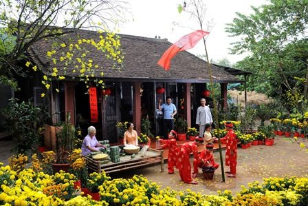
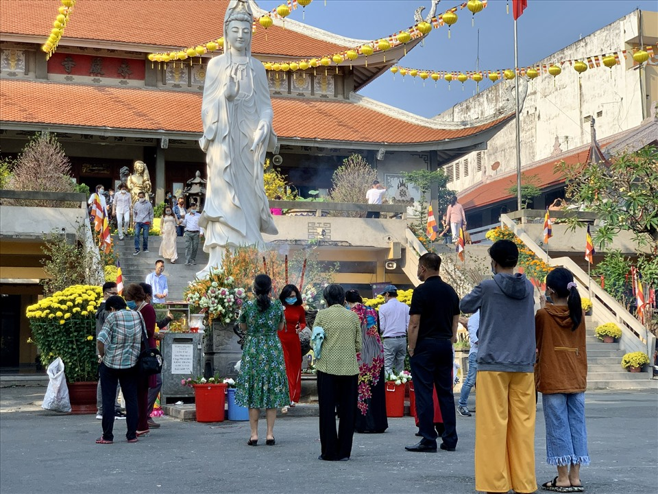
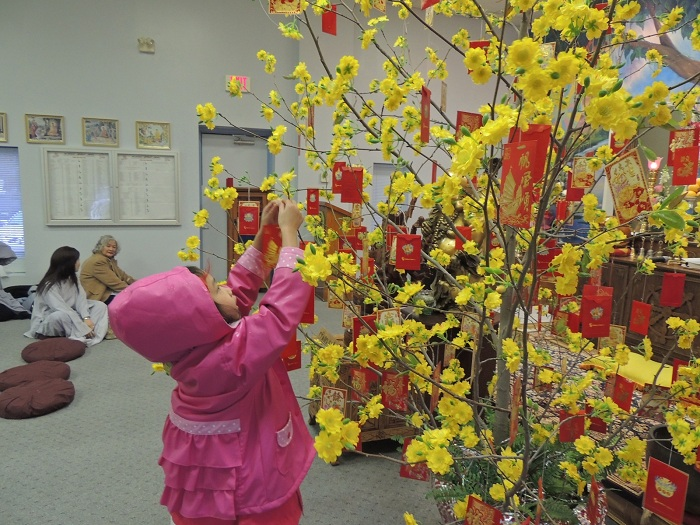
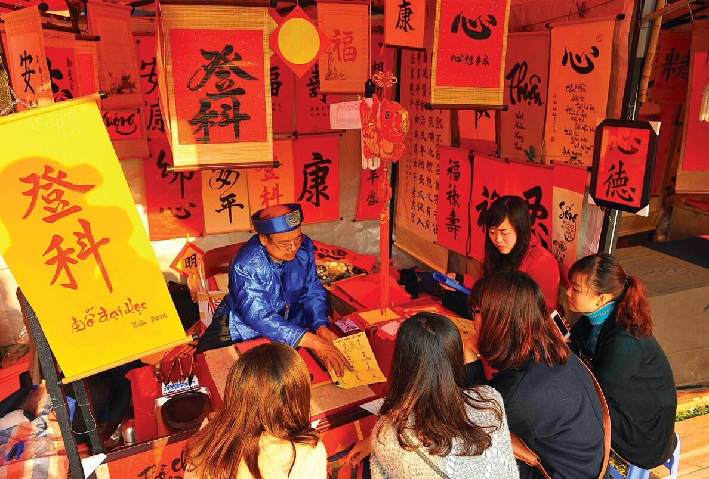
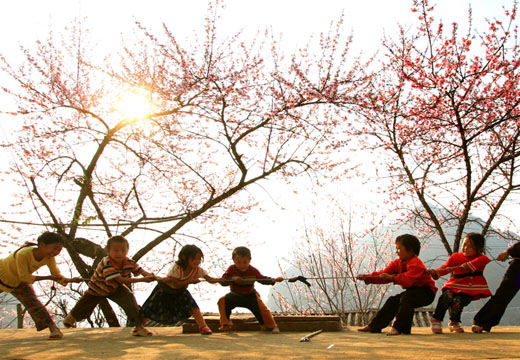

Một trong những hoạt động ngày tết phổ biến ở cả 3 miền là dọn dẹp và trang trí nhà cửa. Bởi theo quan niệm xưa, đầu Xuân năm mới cần trang hoàng những thứ mới mẻ để vạn sự hanh thông, đón những điều tốt lành may mắn.
Thông thường, các gia đình sẽ bắt đầu tổng vệ sinh nhà cửa từ ngày 20 tháng chạp, sửa soạn bàn thờ gia tiên và trưng mai, trưng đào. Ở một số địa phương, người dân còn có phong tục treo cây nêu và câu đối đỏ để cầu cho năm mới vạn sự như ý.
Tết không chỉ là thời gian để gia đình đoàn viên sum vầy mà còn là dịp để con cháu tỏ lòng thành kính với ông bà tổ tiên cùng những người đã khuất. Vì vậy, mỗi gia đình đều sẽ chưng mâm ngũ quả trên bàn thờ.
Tùy vào phong tục của từng vùng miền mà cách bày trí mâm ngũ quả sẽ khác nhau. Ví dụ, Tết miền Bắc thường sẽ chọn 5 loại quả với 5 màu sắc khác nhau, tượng trưng cho ngũ hành. Miền Nam thường chưng mãng cầu, sung, dừa, đu đủ và xoài để biểu thị cho mong ước “Cầu sung vừa đủ xài”.
Không chỉ là một hoạt động ngày Tết bình thường, gói bánh chưng bánh tét là một phong tục không thể thiếu trong nét đẹp văn hóa người Việt. Bắt đầu từ ngày 27 tháng chạp, mọi người đều quây quần bên nhau gói bánh chưng, bánh tét để thờ cúng tổ tiên hoặc dành tặng cho bạn bè, người thân.
Tết miền Bắc thường chuộng gói bánh chưng, bánh càng vuông thì năm mới càng đủ đầy và sung túc. Ngược lại, Tết miền Nam, mọi người thường gói bánh tét hình trụ. Cho dù là hình dáng nào thì nguyên liệu chính làm bánh cũng là gạo nếp, tượng trưng cho nền văn minh lúa nước lâu đời của người Việt.
Theo truyền thống Việt Nam, vào ngày 23 tháng chạp, mọi người sẽ làm một mâm cỗ để tiễn ông Công, ông Táo chầu trời. Ông Công, ông Táo là những vị thần linh đại diện cho sự ấm no trong gia đình. Họ sẽ ghi chép những gì gia chủ đã làm trong năm, sau đó báo cáo lại với Ngọc Hoàng. Lễ cúng thường có hoa quả, nến hương, vàng mã và thả cá chép để đưa các vị vượt Vũ Môn lên Thiên Đình.
Cúng tất niên thường được diễn ra vào ngày 29 hoặc 30 Tết. Mỗi gia đình sẽ làm một mâm cơm để tạ ơn trời đất, các vị thần linh đã phù hộ cho một năm mưa thuận gió hòa. Đồng thời, gia chủ sẽ mời ông bà tổ tiên về vui Tết cùng con cháu, cầu mong năm mới bình an, phát tài phát lộc. Đây cũng là khoảnh khắc mọi người cùng sum vầy, ăn bữa cơm tất niên và cùng nhau trò chuyện về những chuyện đã qua.
Sau khi ăn tất niên, mọi người sẽ cùng nhau đón giao thừa. Đây là thời khắc thiêng liêng mà đất trời giao thoa, chuyển giao giữa năm cũ mà năm mới. Lúc này, gia chủ sẽ làm một lễ cúng ở ngoài trời để “trừ tịch”, bỏ hết mọi điều không may của năm cũ để đón chào năm mới may mắn, an lành.
Xông đất là hoạt động ngày Tết quan trọng trong tín ngưỡng tâm linh của người Việt. Tính từ khoảng thời gian sau giao thừa, bắt đầu năm mới, người nào bước vào nhà đầu tiên chính là người xông đất năm mới. Người này sẽ mang theo may mắn, tài lộc và bình an cho gia chủ. Chính vì vậy, nhiều gia đình thường chọn người hợp mệnh, hợp tuổi để nhờ xông đất cầu may.
Ở Việt Nam, mùng 1 Tết thường nên làm gì để cả năm may mắn? Vào ngày đầu tiên của năm mới, mọi người trong gia đình sẽ cùng nhau chúc Tết ông bà, anh em nội ngoại và bạn bè. Người lớn sẽ lì xì và chúc trẻ em thật ngoan ngoãn, nghe lời và học tập chăm chỉ. Đồng thời, con cháu cũng sẽ chúc ông bà, bố mẹ sức khỏe dồi dào, bình an và phát đạt.
Văn hóa lì xì ngày Tết dần trở thành một nét đẹp truyền thống của người dân Việt Nam. Thông qua những phong bao đỏ, mọi người sẽ trao nhau tài lộc, sự may mắn và thành công trong năm mới.
Đi chùa đầu năm là hoạt động ngày Tết ý nghĩa, được truyền nối qua nhiều thế hệ người Việt. Trong dịp đầu Xuân này, mọi người sẽ ăn mặc trang trọng, mang theo đồ lễ đến chùa để cầu mong năm mới bình an, hạnh phúc. Đồng thời, đây còn là phong tục linh thiêng để gia chủ tỏ lòng thành kính với Đức Phật và tổ tiên trong nhà.
Trong thời khắc giao thừa hoặc ngày đầu tiên của năm mới, mọi người thường đi hái lộc với mong ước rước lộc về nhà. Hoạt động ngày Tết này còn giúp các gia đình cầu may mắn, bình an và phát đạt hơn trong năm tới.
Xin chữ đầu năm là một nét đẹp truyền thống của người Việt trong mỗi dịp Tết đến Xuân về. Mọi người sẽ cùng nhau đi xin chữ treo trong nhà để cầu cho mọi sự tốt lành, gia đình hòa thuận và hạnh phúc đong đầy. Thông thường, mỗi người sẽ xin một chữ hoặc một câu đối khác nhau, tương ứng với lộc vàng mà mình mong ước.
Từ xa xưa, Tết không chỉ là dịp sum họp gia đình mà còn là thời gian để tổ chức những trò chơi dân gian thú vị, mang tính kết nối cộng đồng. Thông qua những trò chơi này, không khí ngày Xuân sẽ thêm phần tươi vui, giải trí và đầy ắp tiếng cười. Ngày nay, ở một số vùng miền vẫn giữ phong tục tổ chức lễ hội và trò chơi dân gian ngày Tết, tạo cơ hội để mọi người vui chơi lành mạnh. Có thể kể đến các trò chơi phổ biến như: Kéo co, đấu vật, chơi đánh đu, đập niêu đất, đi cà kheo và cướp cờ,...
Hy vọng qua bài viết trên, bạn đã hiểu thêm về ngày Tết Nguyên Đán của dân tộc. Chúc các bạn có một năm mới an khang, thịnh vượng nhé!